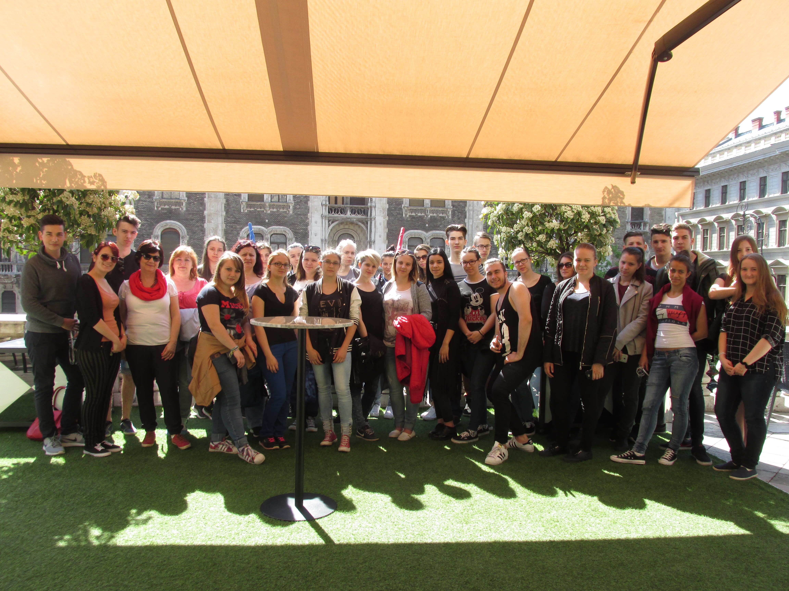
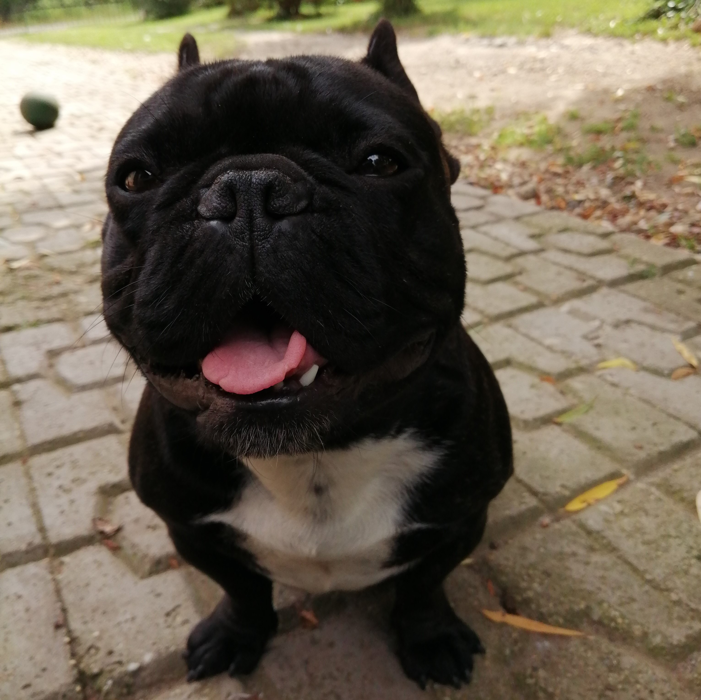
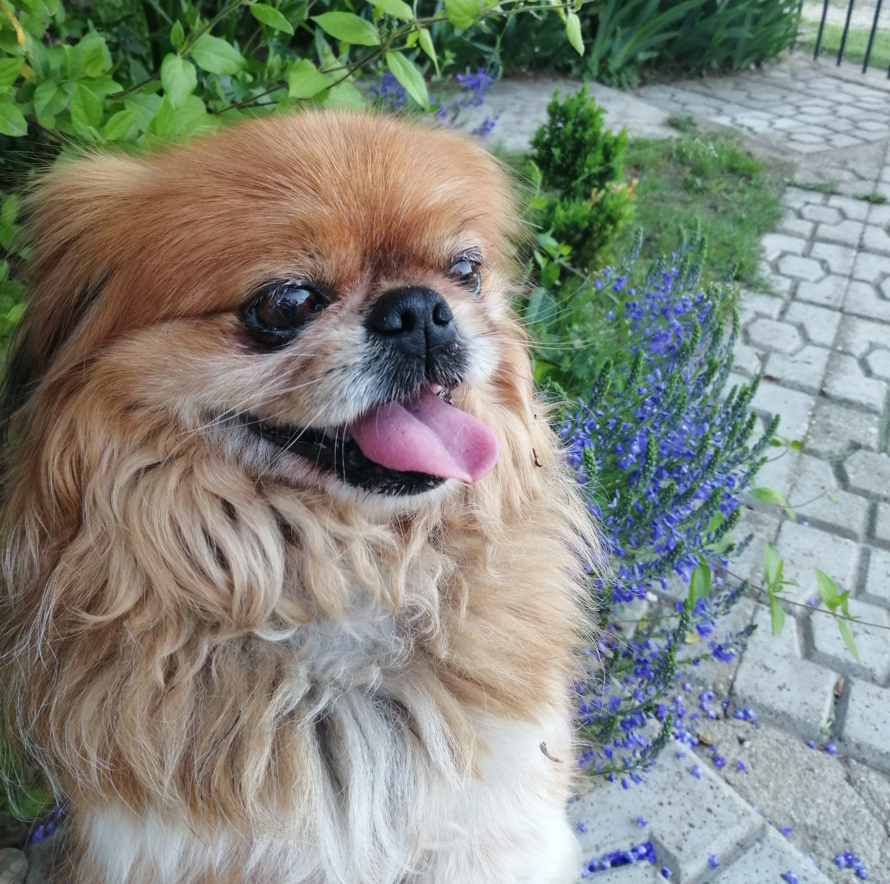

1999.10.20-án születtem, Nyíregyházán. Tiszaeszláron lakom, itt jártam általános iskolába, majd Nyíregyházára vezetett az utam. A Nyíregyházi Zrínyi Ilona Gimnázium és Kollégium diákja voltam 5 évig. Kollégistaként ezidő alatt rengeteg élményt, tapasztalatot szereztem.

Ezután pedig Budapesten folytattam tovább. Ahogy már a bemutatkozómban írtam, a Budapesti Műszaki és Gazdaságtudományi Egyetem gépészmérnöki alapszakára járok.

Világ életemben állatimádó voltam. Egyke létemre van két "testvérem", akik a mindeneim:
 Ezen kívül szeretek sportolni, a szabadban lenni valamint a zene és a filmek is nagy szerepet játszanak az életemben. Az egyik nagy szenvedélyem pedig a Forma 1, amelyet kicsi korom óta követek.